Dental Studio Mijušković · Nikšić
Stomatolog u Nikšiću za zdrav i blistav osmeh
Dr Žarko Mijušković, specijalista stomatološke protetike. Lumineeri, bezmetalna keramika, implanti i izbeljivanje — sa merom za funkciju zagrižaja i prirodan izgled.
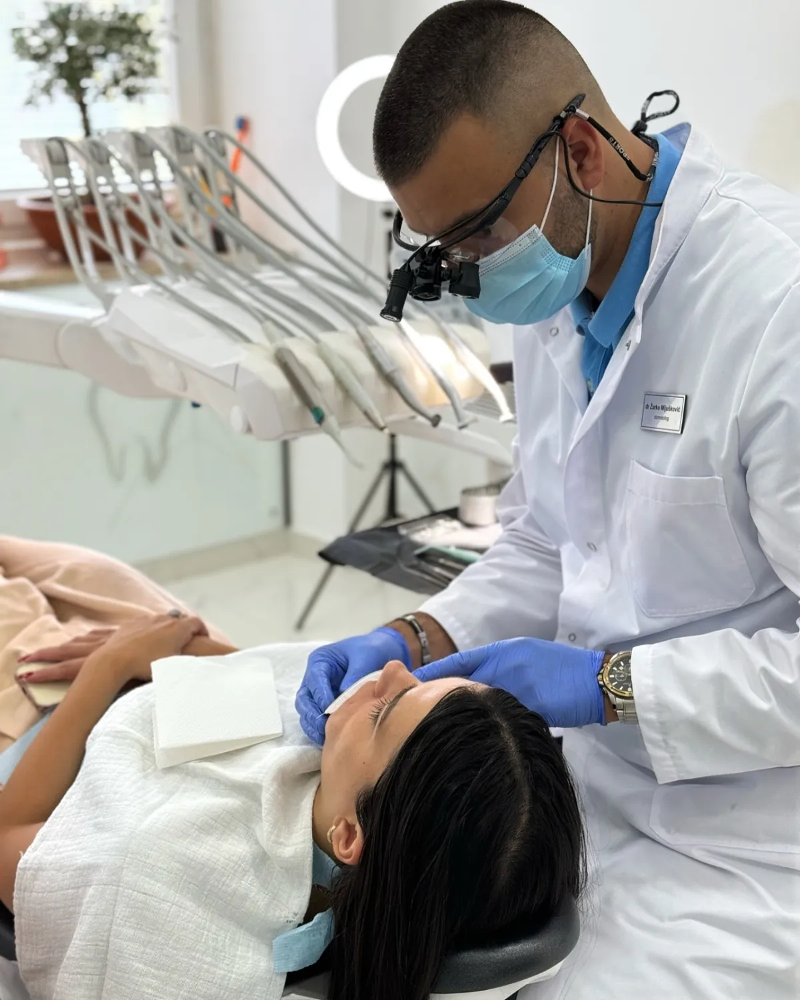
O ordinaciji
Savremena stomatološka protetika i estetika
Dental Studio Mijušković je stomatološka ordinacija u Nikšiću koju vodi dr Žarko Mijušković, specijalista stomatološke protetike. Osmeh ne posmatramo samo kroz boju zuba. Zub mora da bude zdrav, da pravilno zagrize i da traje. Tek onda dolazi estetika.
Zato svaka terapija počinje pregledom i razgovorom. Objasnimo šta vidimo, koje opcije postoje i šta možete da očekujete. Odluku donosite Vi.
Usluge
Čime se bavimo
-
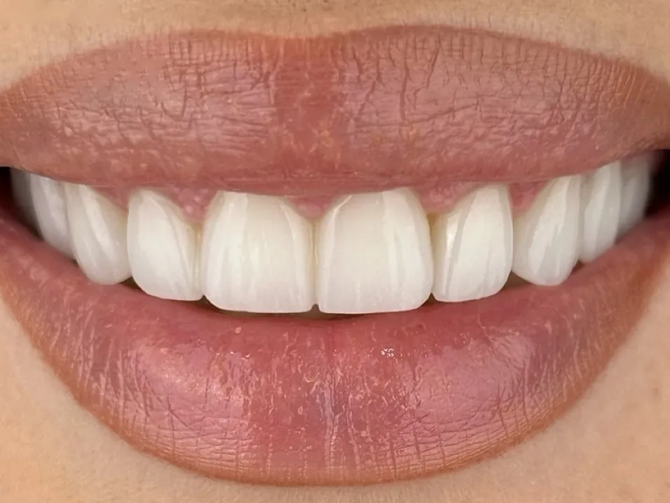
Lumineeri i keramičke fasete
Korekcija boje, oblika i razmaka među zubima, bez brušenja ili uz minimalno brušenje — kada stanje zuba to dozvoljava.
Više o lumineerima -
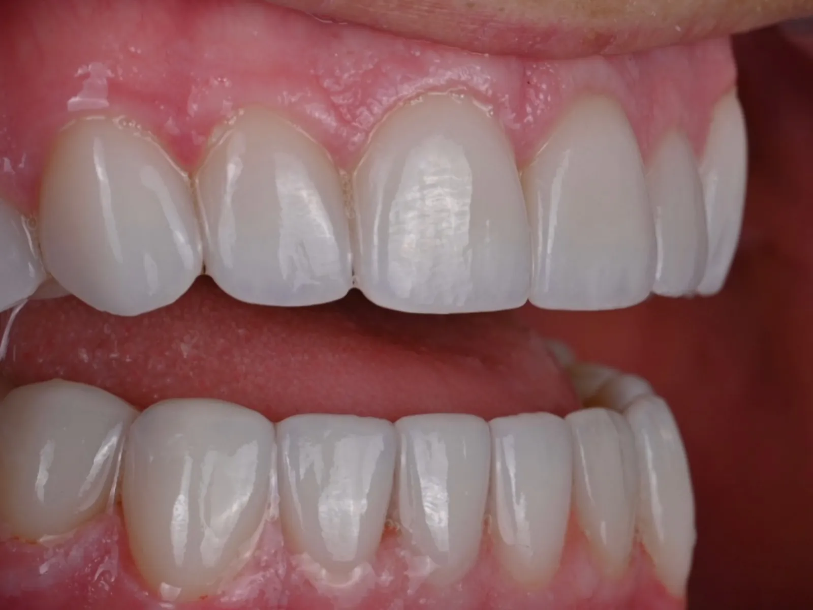
Protetika i bezmetalna keramika
Cirkonijum krunice i mostovi koji vraćaju funkciju i prirodan izgled. Uže polje dr Mijuškovića.
Više o protetici -
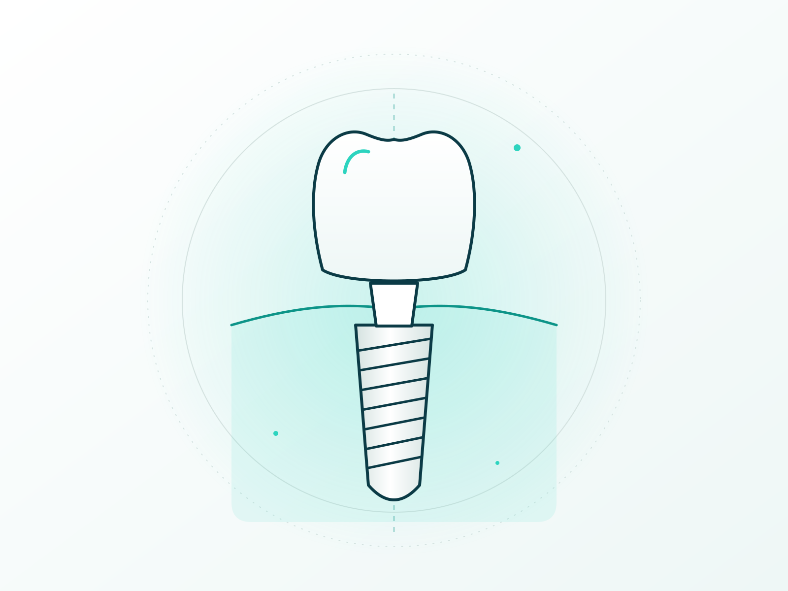
Zubni implanti
Nadoknada izgubljenog zuba bez brušenja susednih, zdravih zuba.
Više o implantima -
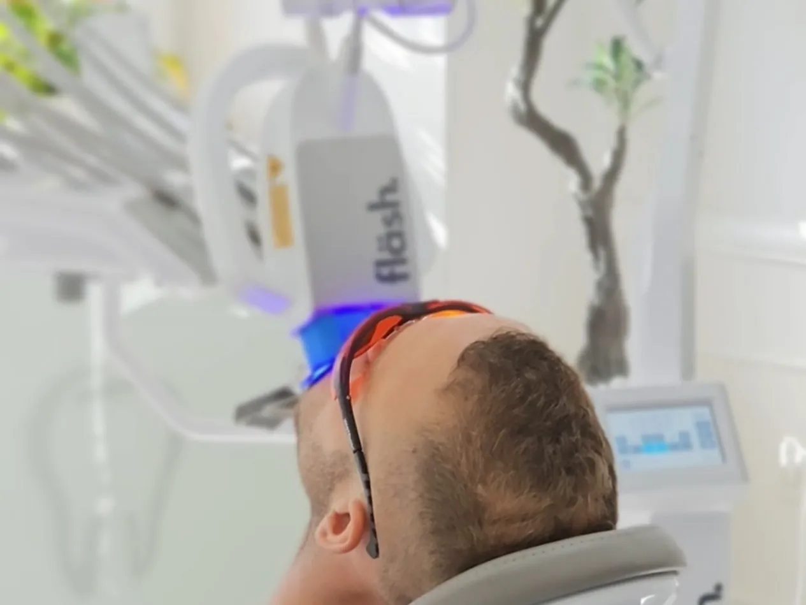
Izbeljivanje zuba
Ordinacijsko izbeljivanje pod kontrolom stomatologa, kao i kućno beljenje uz individualne splintove.
Više o izbeljivanju
Zašto Dental Studio Mijušković
Preciznost, funkcija i estetika
- Specijalista protetike.Krunice, mostovi i fasete su uže polje dr Mijuškovića — ne usputna usluga.
- Funkcija pre svega.Planiramo zagrižaj i odnos zuba, a ne samo boju. Lep osmeh mora i da služi.
- Prirodan izgled.Cilj nije „najbelji“ osmeh, već osmeh koji odgovara Vašem licu.
- Jasan plan.Pre početka znate korake, trajanje i opcije. Plan se pravi nakon pregleda i snimka.
- Direktan kontakt.Poziv, Viber ili WhatsApp — dogovor bez čekanja na formulare.
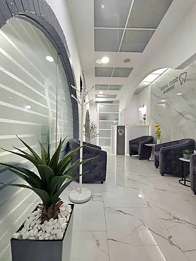
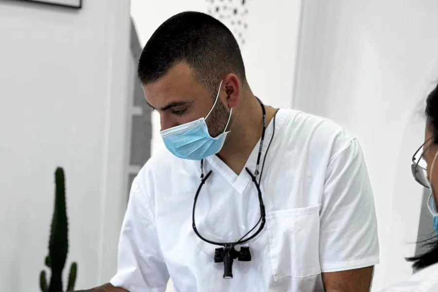
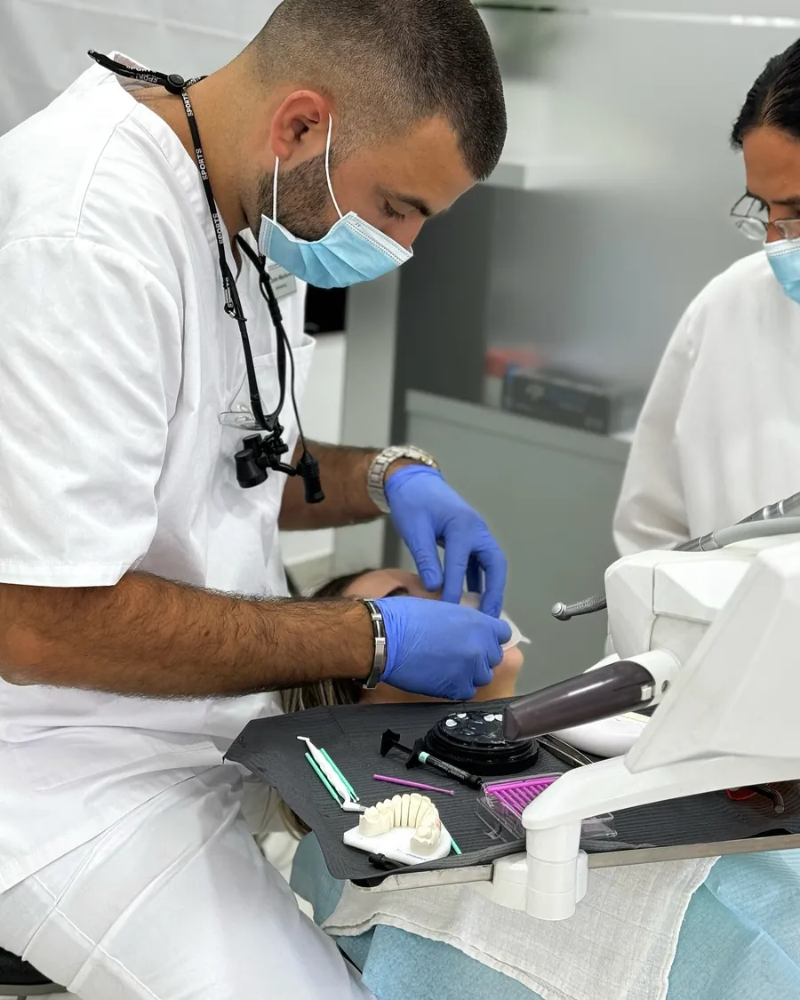
Rezultati
Radovi iz ordinacije
Pogledajte primere lumineera, faseta i bezmetalne keramike iz naše ordinacije. Svaki slučaj je drugačiji i planiran posebno.
Izaberite slučaj
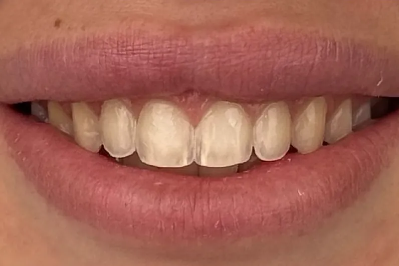
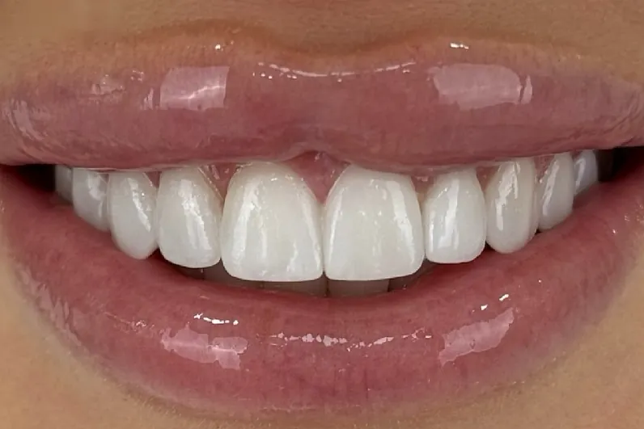
Lumineeri i fasete: slučaj 01
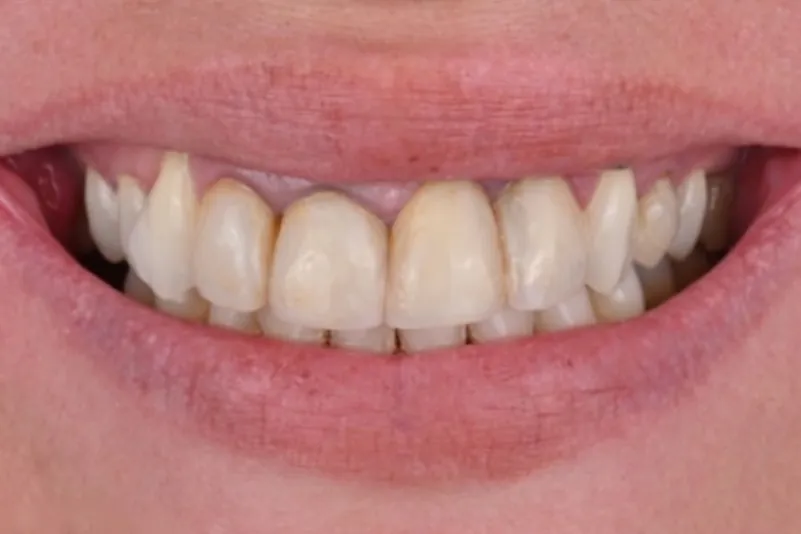
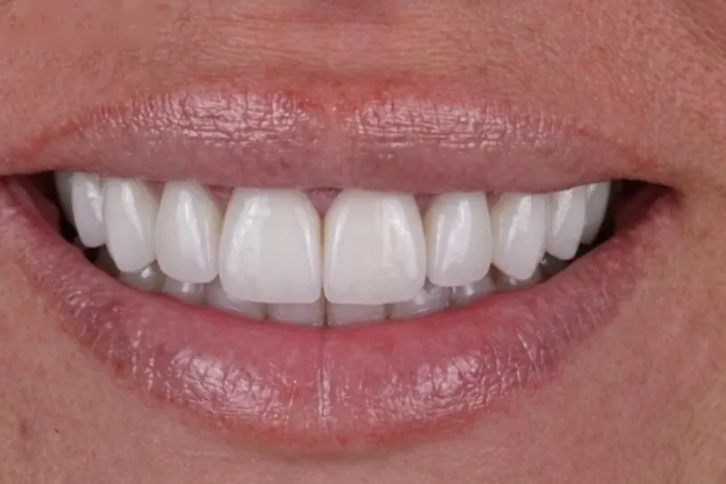
Krunice i mostovi: slučaj 01
Svaki plan terapije pravi se individualno, nakon kliničkog pregleda i snimka. Izgled i trajanje rada zavise od stanja zuba i desni, navika i održavanja, pa se ishod ne može unapred garantovati.
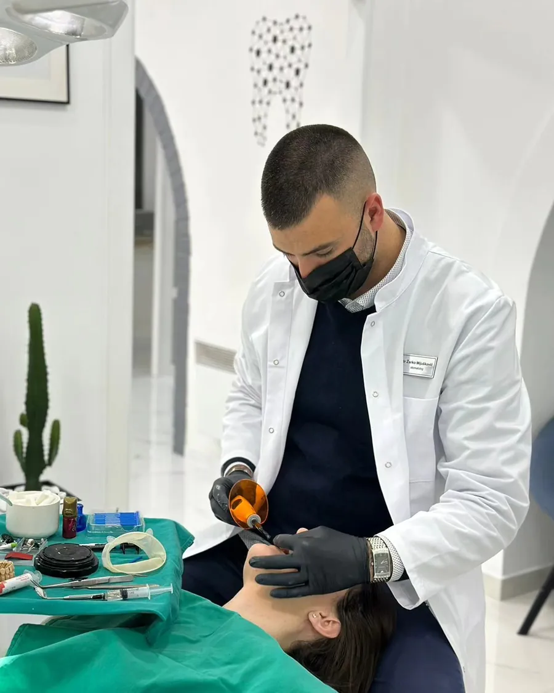
Specijalista protetike
Dr Žarko Mijušković
Dr Žarko Mijušković je doktor stomatologije i specijalista stomatološke protetike. Njegov pristup je jednostavan: zubi ne treba da budu samo beli, već pre svega zdravi i funkcionalno trajni.
Pacijenti van Nikšića
Dolazite iz Podgorice, sa primorja ili iz inostranstva?
Ordinaciju posećuju i pacijenti iz drugih gradova Crne Gore i iz dijaspore. Da biste imali što manje dolazaka, javite nam se unapred.
- Podgorica i okolina.
Nikšić je blizu. Termine za pregled i rad usklađujemo tako da imate što manje putovanja.
- Primorje.
Dogovorimo plan i termine pre dolaska, pa dolazite sa jasnim rasporedom.
- Dijaspora.
Ako ste u Crnoj Gori leti ili za praznike, pišite nam ranije. Pošaljite postojeći snimak (ako ga imate) i kratak opis — reći ćemo Vam okvirno koliko je dolazaka obično potrebno i šta je moguće uraditi u vremenu koje imate. Konačan plan uvek se pravi tek posle pregleda.
Pitanja
Česta pitanja
Kako da zakažem pregled?
Pozovite 067 440 414 ili 067 341 214. Možete pisati i na Viber, WhatsApp (067 440 414) ili Instagram poruku.
Šta se radi na prvom pregledu?
Klinički pregled, razgovor o tome šta želite da promenite i, po potrebi, snimak. Nakon toga dobijate predlog terapije i objašnjenje opcija.
Koliko koštaju lumineeri, krunice ili implanti?
Cena zavisi od broja zuba, stanja i izabranog rešenja. Zato je ne dajemo napamet — plan i cena se određuju posle pregleda.
Da li dr Mijušković lično radi terapiju?
Dr Žarko Mijušković je specijalista stomatološke protetike i vodi protetske i estetske radove u ordinaciji.
Da li radite i obične plombe, lečenje i čišćenje kamenca?
Da. Pored estetike i protetike radimo lečenje zuba i kanala, plombe i preventivu. Pogledajte sve usluge.
Dolazim iz Podgorice / inostranstva. Kako da organizujem dolazak?
Pišite nam unapred na Viber ili WhatsApp. Dogovorićemo termine tako da broj dolazaka bude što manji.
Da li je terapija bolna?
Zahvati se rade uz lokalnu anesteziju kada je potrebno. Pre svakog koraka objasnimo šta sledi, pa možete da kažete kako se osećate.
Gde se nalazite?
U Nikšiću, Crna Gora. Tačna adresa uskoro.
Zakažite pregled
Vaše poverenje je naša najveća nagrada
Javite se za pregled. Zajedno ćemo videti šta je najbolje za Vaše zube.
ili 067 341 214 · Nikšić, Crna Gora